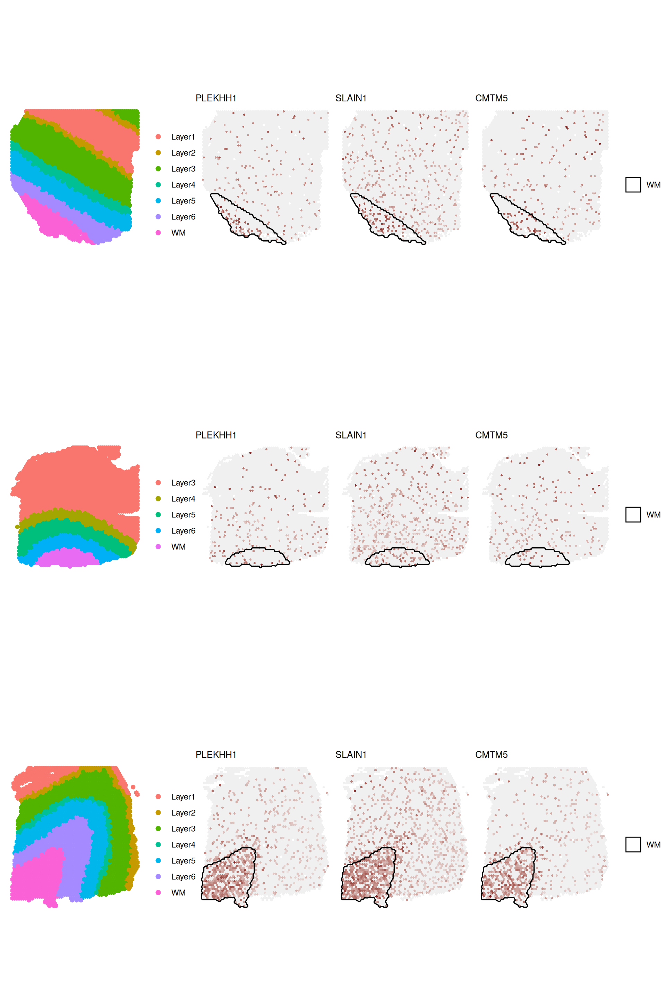
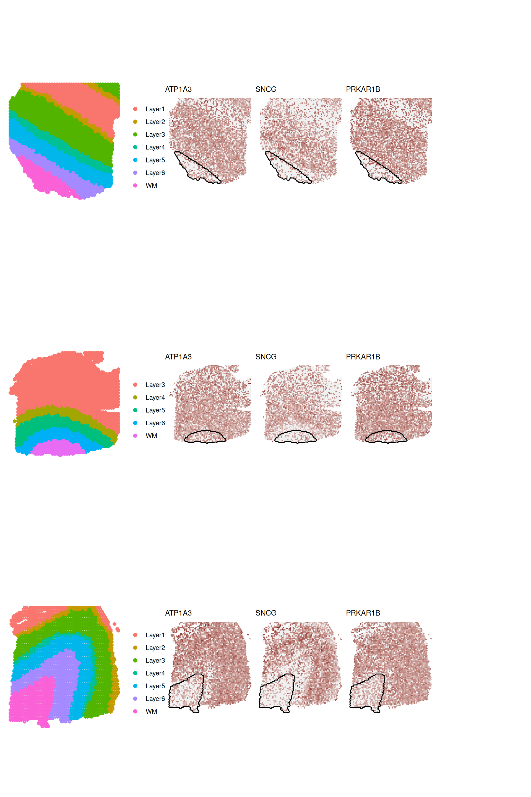

A framework to discover Spatially Variable genes via spatial clusters
Peiying Cai
Institute for Molecular Life Sciences, University of Zurich, SwitzerlandSIB Swiss Institute of Bioinformatics, University of Zurich, Switzerlandpeiying.cai@uzh.ch
Simone Tiberi
Departiment of Statistical Sciences, University of Bologna, Italysimone.tiberi@unibo.it
03/25/2025
Source:vignettes/SVG.Rmd
SVG.RmdIntroduction
DESpace is an intuitive framework for identifying spatially variable (SV) genes (SVGs) via edgeR (Robinson, McCarthy, and Smyth 2010), one of the most common methods for performing differential expression analyses.
Based on pre-annotated spatial clusters as summarized spatial information, DESpace models gene expression using a negative binomial (NB), via edgeR (Robinson, McCarthy, and Smyth 2010), with spatial clusters as covariates. SV genes (SVGs) are then identified by testing the significance of spatial clusters.
Our approach assumes that the spatial structure can be summarized by spatial clusters, which should reproduce the key features of the tissue (e.g., white matter and layers in brain cortex). A significant test of these covariates indicates that space influences gene expression, hence identifying spatially variable genes.
Our model is flexible and robust, and is significantly faster than the most SV methods. Furthermore, to the best of our knowledge, it is the only SV approach that allows: - performing a SV test on each individual spatial cluster, hence identifying the key regions affected by spatial variability; - jointly fitting multiple samples, targeting genes with consistent spatial patterns across biological replicates.
Below, we illustrate en example usage of the package.
Basics
DESpace is implemented as a R package within
Bioconductor, which is the main venue for omics analyses, and we use
various other Bioconductor packages (e.g., SpatialLIBD, and edgeR).
DESpace package is available on Bioconductor and can be
installed with the following command:
if (!requireNamespace("BiocManager", quietly = TRUE)) {
install.packages("BiocManager")
}
BiocManager::install("DESpace")
## Check that you have a valid Bioconductor installation
BiocManager::valid()The development version of DESpacecan also be installed
from the Bioconductor-devel branch or from GitHub.
To access the R code used in the vignettes, type:
browseVignettes("DESpace")Questions relative to DESpace should be reported as a new issue at BugReports.
To cite DESpace, type:
citation("DESpace")Load R packages:
Data
As an example dataset, we consider a human dorsolateral pre-frontal cortex (DLPFC) spatial transcriptomics dataset from the 10x Genomics Visium platform, including three neurotypical adult donors (i.e., biological replicates), with four images per subject (Maynard et al. 2020). The full dataset consists of 12 samples, which can be accessed via spatialLIBD Bioconductor package.
Input data
Here, we consider a subset of the original data, consisting of three
biological replicates: 1 image for each of the three brain subjects.
Initially, in Section 3 individual sample , we fit our approach
on a single sample, whose data is stored in spe3 whereas
all 3 samples will later be jointly used in Section 4 Multiple
samples.
# Connect to ExperimentHub
ehub <- ExperimentHub::ExperimentHub()
# Download the full real data (about 2.1 GB in RAM) use:
spe_all <- spatialLIBD::fetch_data(type = "spe", eh = ehub)
# Specify column names of spatial coordinates in colData(spe)
coordinates <- c("array_row", "array_col")
# Specify column names of spatial clusters in colData(spe)
cluster_col <- 'layer_guess_reordered'
# Remove spots missing annotations
spe_all <- spe_all[, !is.na(spe_all[[cluster_col]])]
# Create three spe objects, one per sample:
spe1 <- spe_all[, colData(spe_all)$sample_id == '151507']
spe2 <- spe_all[, colData(spe_all)$sample_id == '151669']
spe3 <- spe_all[, colData(spe_all)$sample_id == '151673']
rm(spe_all)
# Select small set of random genes for faster runtime in this example
set.seed(123)
sel_genes <- sample(dim(spe1)[1],2000)
spe1 <- spe1[sel_genes,]
spe2 <- spe2[sel_genes,]
spe3 <- spe3[sel_genes,]
# For covenience, we use “gene names” instead of “gene ids”:
rownames(spe1) <- rowData(spe1)$gene_name
rownames(spe2) <- rowData(spe2)$gene_name
rownames(spe3) <- rowData(spe3)$gene_nameThe spatial tissues of each sample were manually annotated in the
original manuscript (Maynard et al. 2020),
and spots were labeled into one of the following categories: white
matter (WM) and layers 1 to 6. The manual annotations are stored in
column layer_guess_reordered of the colData,
while columns array_col and array_row provide
the spatial coordinates of spots.
# We select a subset of columns
keep_col <- c(coordinates,cluster_col,"expr_chrM_ratio","cell_count")
head(colData(spe3)[keep_col])## DataFrame with 6 rows and 5 columns
## array_row array_col layer_guess_reordered expr_chrM_ratio
## <integer> <integer> <factor> <numeric>
## AAACAAGTATCTCCCA-1 50 102 Layer3 0.166351
## AAACAATCTACTAGCA-1 3 43 Layer1 0.122376
## AAACACCAATAACTGC-1 59 19 WM 0.114089
## AAACAGAGCGACTCCT-1 14 94 Layer3 0.242223
## AAACAGCTTTCAGAAG-1 43 9 Layer5 0.152174
## AAACAGGGTCTATATT-1 47 13 Layer6 0.155095
## cell_count
## <integer>
## AAACAAGTATCTCCCA-1 6
## AAACAATCTACTAGCA-1 16
## AAACACCAATAACTGC-1 5
## AAACAGAGCGACTCCT-1 2
## AAACAGCTTTCAGAAG-1 4
## AAACAGGGTCTATATT-1 6Quality control/filtering
Quality control (QC) procedures at the spot and gene level aim to remove both low-quality spots, and lowly abundant genes. For QC, we adhere to the instructions from “Orchestrating Spatially Resolved Transcriptomics Analysis with Bioconductor” (OSTA). The library size, UMI counts, ratio of mitochondrial chromosome (chM) expression, and number of cells per spot are used to identify low-quality spots.
# Sample 1:
# Calculate per-spot QC metrics and store in colData
spe1 <- scuttle::addPerCellQC(spe1,)
# Remove combined set of low-quality spots
spe1 <- spe1[, !(colData(spe1)$sum < 10 | # library size
colData(spe1)$detected < 10 | # number of expressed genes
colData(spe1)$expr_chrM_ratio > 0.30| # mitochondrial expression ratio
colData(spe1)$cell_count > 10)] # number of cells per spot
# Sample 2:
# Calculate per-spot QC metrics and store in colData
spe2 <- scuttle::addPerCellQC(spe2,)
# Remove combined set of low-quality spots
spe2 <- spe2[, !(colData(spe2)$sum < 20 |
colData(spe2)$detected < 15 |
colData(spe2)$expr_chrM_ratio > 0.35|
colData(spe2)$cell_count > 8)]
# Sample 3:
spe3 <- scuttle::addPerCellQC(spe3,)
# Remove combined set of low-quality spots
spe3 <- spe3[, !(colData(spe3)$sum < 25 |
colData(spe3)$detected < 25 |
colData(spe3)$expr_chrM_ratio > 0.3|
colData(spe3)$cell_count > 15)]Then, we discard lowly abundant genes, which were detected in less than 20 spots.
# For each sample i:
for(i in seq_len(3)){
spe_i <- eval(parse(text = paste0("spe", i)))
# Select QC threshold for lowly expressed genes: at least 20 non-zero spots:
qc_low_gene <- rowSums(assays(spe_i)$counts > 0) >= 20
# Remove lowly abundant genes
spe_i <- spe_i[qc_low_gene,]
assign(paste0("spe", i), spe_i)
message("Dimension of spe", i, ": ", dim(spe_i)[1], ", ", dim(spe_i)[2])
}## Dimension of spe1: 847, 4169## Dimension of spe2: 867, 3610## Dimension of spe3: 907, 3584Individual sample
We fit our approach to discover SVGs in an individual sample. In Section 4 Multiple samples, we will show how to jointly embed multiple replicates.
Clustering
This framework relies on spatial clusters being accessible and successfully summarizing the primary spatial characteristics of the data. In most datasets, these spatial features are either accessible or can be easily generated with spatial clustering algorithms.
Manual annotation
If manual annotations are provided (e.g., annotated by a
pathologist), we can directly use those. With the spe or
spe object that contains coordinates of the spot-level
data, we can visualize spatial clusters.
# View LIBD layers for one sample
CD <- as.data.frame(colData(spe3))
ggplot(CD,
aes(x=array_col,y=array_row,
color=factor(layer_guess_reordered))) +
geom_point() +
theme_void() + scale_y_reverse() +
theme(legend.position="bottom") +
labs(color = "", title = paste0("Manually annotated spatial clusters"))
Spatially resolved clustering
If manual annotations are not available, we can use spatially resolved clustering tools. These methods, by jointly employing spatial coordinates and gene expression data, enable obtaining spatial clusters. Although, in this vignette we use pre-computed manually annotated clusters, below we provide links to two popular spatially resolved clustering tools: BayesSpace (Zhao et al. 2021) and StLearn (Pham et al. 2020).
BayesSpace
BayesSpace is a Bioconductor package that provides a Bayesian statistical approach for spatial transcriptomics data clustering (BayesSpace). There is a specific vignette for using BayesSpace on this dataset (human DLPFC) here.
After using BayesSpace, the spatial cluster assignments
(spatial.cluster) are available in the
colData(spe).
StLearn
StLearn, a python-based package, is designed for spatial transciptomics data. It allows spatially-resolved clustering based on Louvain or k-means (stLearn). There is a tutorial for using StLearn on this dataset (human DLPFC) here.
After running stLearn, we can store results as a csv
file.
Then, we can load these results in R and store spatial clusters in
the spe object.
SV testing
Once we have spatial clusters, we can search for SVGs.
Gene-level test
Fit the model via svg_test function. Parameter
spe specifies the input SpatialExperiment or
SingleCellExperiment object, while cluster_col
defines the column names of colData(spe) containing spatial
clusters. To obtain all statistics, set verbose to
TRUE (default value).
## using 'svg_test' for spatial gene/pattern detection.## Filter low quality genes:## min_counts = 20; min_non_zero_spots = 10.## The number of genes that pass filtering is 907.## single sample testA list of results is returned. The main results of interest are
stored in the gene_results: a data.fame, where
columns contain gene names (gene_id), likelihood ratio test
statistics (LR), average (across spots) log-2 counts per
million (logCPM), raw p-values (PValue) and
Benjamini-Hochberg adjusted p-values (FDR).
head(results$gene_results, 3)## gene_id LR logCPM PValue FDR
## SNCG SNCG 1302.568 14.36227 3.011631e-278 2.731550e-275
## ATP1A3 ATP1A3 1235.840 14.68931 8.376122e-264 3.798571e-261
## PLEKHH1 PLEKHH1 1045.531 13.69919 1.268125e-222 3.833964e-220The second element of the results (a DGEList object
estimated_y) contains the estimated common dispersion,
which can later be used to speed-up calculation when testing individual
clusters.
The third and forth element of the results (DGEGLM and
DGELRT objects) contain full statistics from
edgeR::glmFit and edgeR::glmLRT.
## [1] "DGEList"
## attr(,"package")
## [1] "edgeR"## [1] "DGELRT"
## attr(,"package")
## [1] "edgeR"## [1] "DGEGLM"
## attr(,"package")
## [1] "edgeR"Visualize the gene expression of the three most significant genes in
FeaturePlot(). Note that the gene names in vector
feature, should also appear in the count matrix’s row
names. Specifying the column names of spatial coordinates of spots is
only necessary when they are not named row and
col.
(feature <- results$gene_results$gene_id[seq_len(3)])## [1] "SNCG" "ATP1A3" "PLEKHH1"
FeaturePlot(spe3, feature,
coordinates = coordinates,
ncol = 3, title = TRUE)
Additionally, function FeaturePlot() can draw an outline
around each cluster.
FeaturePlot(spe3, feature,
coordinates = coordinates,
annotation_cluster = TRUE,
cluster_col = cluster_col,
cluster = 'all',
legend_cluster = TRUE, title = TRUE)
Individual cluster test
DESpace can also be used to reveal the specific areas of the
tissue affected by spatial variability; i.e., spatial clusters that are
particularly over/under abundant compared to the average. Function
individual_svg() can be used to identify SVGs for each
individual cluster. Parameter cluster_col indicates the
column names of colData(spe) containing spatial
clusters.
For every spatial cluster we test, edgeR would normally
re-compute the dispersion estimates based on the specific design of the
test. However, this calculation represents the majority of the overall
computing time. Therefore, to speed-up calculations, we propose to use
the dispersion estimates which were previously computed for the
gene-level tests. Albeit this is an approximation, in our benchmarks, it
leads to comparable performance in terms of sensitivity and specificity.
If you want to use pre-computed gene-level dispersion estimates, set
edgeR_y to estimated_y. Alternatively, if you
want to re-compute dispersion estimates (significantly slower, but
marginally more accurate option), leave edgeR_y empty.
set.seed(123)
cluster_results <- individual_svg(spe3,
edgeR_y = results$estimated_y,
cluster_col = cluster_col)## Filter low quality genes:## min_counts = 20; min_non_zero_spots = 10.## The number of genes that pass filtering is907.## Pre-processing## Start modeling## Returning resultsindividual_svg() returns a list containing the results
of the individual cluster tests. Similarly to above, for each cluster,
results are reported as a data.fame, where columns contain
gene names (gene_id), likelihood ratio test statistics
(LR), log2-fold changes (logFC), raw p-values
(PValue) and Benjamini-Hochberg adjusted p-values
(FDR). NB: that the logFC compares each
cluster to the rest of the tissue; e.g., a logFC of 2 for WM test
indicates that the average gene expression in WM is (4 times) higher
than the average gene expression in non-WM tissue.
Visualize results for WM.
class(cluster_results)## [1] "list"
names(cluster_results)## [1] "Layer1" "Layer2" "Layer3" "Layer4" "Layer5" "Layer6" "WM"top_results function can be used to combine gene-and
cluster-level results. By default, results from
top_results() report both adjusted p-values and log2-FC;
however, users can also choose to only report either, by specifying
select = "FDR" or select = "logFC". Below,
gene_PValue and gene_FDR columns refer to the
gene-level testing, while the subsequent columns indicate the
cluster-specific results.
merge_res <- top_results(results$gene_results, cluster_results)
head(merge_res,3)## gene_id gene_LR gene_logCPM gene_Pvalue gene_FDR Layer1_FDR
## 1 SNCG 1302.568 14.36227 3.011631e-278 2.731550e-275 4.639333e-13
## 2 ATP1A3 1235.840 14.68931 8.376122e-264 3.798571e-261 3.932518e-15
## 3 PLEKHH1 1045.531 13.69919 1.268125e-222 3.833964e-220 6.918017e-15
## Layer2_FDR Layer3_FDR Layer4_FDR Layer5_FDR Layer6_FDR
## 1 2.806987e-06 8.405926e-80 7.600571e-13 2.918858e-26 1.920668e-65
## 2 2.024988e-03 5.101748e-60 6.778389e-12 1.448295e-15 7.998865e-25
## 3 1.210448e-06 6.445085e-44 1.058168e-06 4.480970e-17 3.190486e-01
## WM_FDR Layer1_logFC Layer2_logFC Layer3_logFC Layer4_logFC
## 1 3.542972e-133 -0.7714273 -0.4604297 0.8320111 0.6135088
## 2 2.069121e-182 -0.6342197 0.2225217 0.5509819 0.4556480
## 3 7.833644e-209 -1.4032821 -0.7711669 -1.1047480 -0.8702769
## Layer5_logFC Layer6_logFC WM_logFC
## 1 0.5492228 -1.0925815 -1.966913
## 2 0.3252719 -0.4761104 -1.728962
## 3 -0.8053807 -0.1317909 2.320301
merge_res <- top_results(results$gene_results, cluster_results,
select = "FDR")
head(merge_res,3)## gene_id gene_LR gene_logCPM gene_Pvalue gene_FDR Layer1_FDR
## 1 SNCG 1302.568 14.36227 3.011631e-278 2.731550e-275 4.639333e-13
## 2 ATP1A3 1235.840 14.68931 8.376122e-264 3.798571e-261 3.932518e-15
## 3 PLEKHH1 1045.531 13.69919 1.268125e-222 3.833964e-220 6.918017e-15
## Layer2_FDR Layer3_FDR Layer4_FDR Layer5_FDR Layer6_FDR
## 1 2.806987e-06 8.405926e-80 7.600571e-13 2.918858e-26 1.920668e-65
## 2 2.024988e-03 5.101748e-60 6.778389e-12 1.448295e-15 7.998865e-25
## 3 1.210448e-06 6.445085e-44 1.058168e-06 4.480970e-17 3.190486e-01
## WM_FDR
## 1 3.542972e-133
## 2 2.069121e-182
## 3 7.833644e-209We can further specify a cluster and check top genes detected by DESpace.
# Check top genes for WM
results_WM <- top_results(cluster_results = cluster_results,
cluster = "WM")
head(results_WM, 3)## Cluster gene_id Cluster_LR Cluster_logCPM Cluster_logFC Cluster_PValue
## PLEKHH1 WM PLEKHH1 964.6586 13.69919 2.320301 8.636874e-212
## ATP1A3 WM ATP1A3 841.7313 14.68931 -1.728962 4.562561e-185
## SLAIN1 WM SLAIN1 723.0535 13.78576 1.870661 2.901872e-159
## Cluster_FDR
## PLEKHH1 7.833644e-209
## ATP1A3 2.069121e-182
## SLAIN1 8.773325e-157With high_low parameter, we can further filter genes to
visualize those with higher (high_low = "high") or lower
(high_low = "low") average abundance in the specified
cluster, compared to the average abundance in the rest of the tissue. By
default, high_low = “both” and all results are
provided.
results_WM_both <- top_results(cluster_results = cluster_results,
cluster = "WM",
high_low = "both")Here we present the highly abundant cluster SVGs; i.e., SVGs with higher expression in WM compared to the rest of the area.
head(results_WM_both$high_genes, 3)## Cluster gene_id Cluster_LR Cluster_logCPM Cluster_logFC Cluster_PValue
## PLEKHH1 WM PLEKHH1 964.6586 13.69919 2.320301 8.636874e-212
## SLAIN1 WM SLAIN1 723.0535 13.78576 1.870661 2.901872e-159
## CMTM5 WM CMTM5 659.0744 13.65302 2.098511 2.374763e-145
## Cluster_FDR
## PLEKHH1 7.833644e-209
## SLAIN1 8.773325e-157
## CMTM5 4.307821e-143We visualize the lowly abundant cluster SVGs; i.e., SVGs with lower expression in WM compared to the rest of the area.
head(results_WM_both$low_genes, 3)## Cluster gene_id Cluster_LR Cluster_logCPM Cluster_logFC Cluster_PValue
## ATP1A3 WM ATP1A3 841.7313 14.68931 -1.728962 4.562561e-185
## PRKAR1B WM PRKAR1B 669.2057 14.72797 -1.505988 1.487108e-147
## NSF WM NSF 628.9360 14.50629 -1.745010 8.515901e-139
## Cluster_FDR
## ATP1A3 2.069121e-182
## PRKAR1B 3.372018e-145
## NSF 1.287320e-136Visualize the gene expression of the top genes for layer WM. A
cluster outline can be drawn by specifying the column names of clusters
stored in colData(spe) and the vector of cluster names via
cluster_col and cluster.
# SVGs with higher than average abundance in WM
feature <- rownames(results_WM_both$high_genes)[seq_len(3)]
FeaturePlot(spe3, feature, cluster_col = cluster_col,
coordinates = coordinates, cluster = 'WM',
legend_cluster = TRUE, annotation_cluster = TRUE,
linewidth = 0.6, title = TRUE)
# SVGs with lower than average abundance in WM
feature <- rownames(results_WM_both$low_genes)[seq_len(3)]
FeaturePlot(spe3, feature, cluster_col = cluster_col,
coordinates = coordinates, cluster = 'WM',
legend_cluster = TRUE, annotation_cluster = TRUE,
linewidth = 0.6,title = TRUE)
Multiple samples
If biological replicates are available, our framework allows jointly modeling them to target SVGs with coherent spatial patterns across samples. This approach may be particularly beneficial when data are characterized by a large degree of (biological and technical) variability, such as in cancer. Importantly, only genes detected (above filtering thresholds) in all samples will be analyzed.
Clustering
Similar to gene-level testing, the multi-sample extension requires pre-annotated spatial clusters.
Manual annotation
If the manual annotation for each sample is available, we can combine
all samples and use manual annotations directly. Note that cluster
labels must be consistent across samples (i.e., WM in sample 1 should
represent the same tissue as WM in sample 2). With the
spe.combined object that contains coordinates of the
spot-level data, we can visualize spatial clusters.
set.seed(123)
# Use common genes
a <- rownames(counts(spe1));
b <- rownames(counts(spe2));
c <- rownames(counts(spe3))
# find vector of common genes across all samples:
CommonGene <- Reduce(intersect, list(a,b,c))
spe1 <- spe1[CommonGene,]
spe2 <- spe2[CommonGene,]
spe3 <- spe3[CommonGene,]
# Combine three samples
spe.combined <- cbind(spe1, spe2, spe3, deparse.level = 1)
ggplot(as.data.frame(colData(spe.combined)),
aes(x=array_col, y=array_row,
color=factor(layer_guess_reordered))) +
geom_point() +
facet_wrap(~sample_id) +
theme_void() + scale_y_reverse() +
theme(legend.position="bottom") +
labs(color = "", title = "Manually annotated spatial clusters")
Spatially resolved (multi-sample) clustering
Similarly to above, if manual annotations are not available, we can use spatially resolved clustering tools. Both BayesSpace (Zhao et al. 2021) and StLearn (Pham et al. 2020) allow jointly clustering multiple samples. In particular each tool has a specific vignettes for multi-testing clustering: BayesSpace vignettes, and stLearn vignettes.
Single sample clustering
In our benchmarks, we have noticed that, with both BayesSpace and StLearn, joint spatial clustering of multiple samples is more prone to failure and inaccurate results than spatial clustering of individual samples. Therefore, if multi-sample clustering fails, we suggest trying to cluster individual samples (as in Section 3 Individual sample) and manually match cluster ids across samples, to ensure that “cluster 1” always refers to the same spatial region in all samples.
SV testing
Once we have spatial clusters for multiple samples, we add them to
colData(spe.combined) as the column
layer_guess_reordered and fit the model with spatial
clusters as covariates.
Gene-level test
Fit the model via svg_test(). Parameter spe
specifies the input SpatialExperiment or
SingleCellExperiment object, while cluster_col
and sample_col define the column names of
colData(spe) containing spatial clusters and sample ids.
With replicates = TRUE, we fit the multi-sample model.
The second element of the result (a DGEList object
estimated_y_multi) contains the estimated common dispersion
for the multi-sample case.
set.seed(123)
multi_results <- svg_test(spe = spe.combined,
cluster_col = cluster_col,
sample_col = 'sample_id',
replicates = TRUE)## using 'svg_test' for spatial gene/pattern detection.## Filter low quality genes:## min_counts = 20; min_non_zero_spots = 10.## The number of genes that pass filtering is 827.## multi-sample test## Repeated column names found in count matrixA list of results are returned. The main results of interest are
stored in the gene_results.
head(multi_results$gene_results,3)## gene_id LR logCPM PValue FDR
## HPCAL1 HPCAL1 2063.975 14.41886 0 0
## NSF NSF 1524.998 14.70448 0 0
## ATP1A3 ATP1A3 1578.198 14.88558 0 0The second element of the results (a DGEList object
estimated_y) contains the estimated common dispersion,
which can later be used to speed-up calculation when testing individual
clusters.
class(multi_results$estimated_y)## [1] "DGEList"
## attr(,"package")
## [1] "edgeR"For each sample, we can visualize the gene expression of the most
significant SVGs. Note that column names of spatial coordinates of spots
should be row and col.
## Top three spatially variable genes
feature <- multi_results$gene_results$gene_id[seq_len(3)]; feature## [1] "HPCAL1" "NSF" "ATP1A3"
## Sample names
samples <- unique(colData(spe.combined)$sample_id); samples## [1] "151507" "151669" "151673"
## Use purrr::map to combine multiple figures
spot_plots <- purrr::map(seq_along(samples), function(j) {
## Subset spe for each sample j
spe_j <- spe.combined[, colData(spe.combined)$sample_id == samples[j] ]
## Store three gene expression plots with gene names in `feature` for spe_j
spot_plots <- FeaturePlot(spe_j, feature,
coordinates = coordinates,
cluster_col = cluster_col, title = TRUE,
annotation_cluster = TRUE, legend_cluster = TRUE)
return(spot_plots)
})
patchwork::wrap_plots(spot_plots, ncol=1)
Individual cluster test
Similarly to what shown in Section 3 Individual sample, our
framework can discover the key SV spatial clusters also when jointly
fitting multiple samples. For a multi-sample testing, set
replicates = TRUE in individual_svg().
set.seed(123)
cluster_results <- individual_svg(spe.combined,
edgeR_y = multi_results$estimated_y,
replicates = TRUE,
cluster_col = cluster_col)## Filter low quality genes:## min_counts = 20; min_non_zero_spots = 10.## The number of genes that pass filtering is827.## Pre-processing## Start modeling## Returning resultsindividual_svg() returns a list containing the results
of individual clusters, specified in cluster parameter. In
this case, logFC refers to the log2-FC between the average abundance,
across all samples, of a spatial cluster and the average abundance of
all remaining clusters (e.g., WM vs. non-WM tissue).
Visualize results for WM.
class(cluster_results)## [1] "list"
names(cluster_results)## [1] "Layer1" "Layer2" "Layer3" "Layer4" "Layer5" "Layer6" "WM"As above, top_results function can be used to combine
gene-level and cluster-level results.
merge_res <- top_results(multi_results$gene_results, cluster_results,
select = "FDR")
head(merge_res,3)## gene_id gene_LR gene_logCPM gene_Pvalue gene_FDR Layer1_FDR Layer2_FDR
## 1 ATP1A3 1578.198 14.88558 0 0 1.983900e-93 2.062529e-02
## 2 HPCAL1 2063.975 14.41886 0 0 4.526699e-15 1.877187e-191
## 3 NSF 1524.998 14.70448 0 0 5.192640e-127 4.090941e-01
## Layer3_FDR Layer4_FDR Layer5_FDR Layer6_FDR WM_FDR
## 1 3.676730e-16 1.916149e-23 1.722706e-46 4.968036e-03 8.763911e-194
## 2 4.827595e-126 7.531943e-51 1.021543e-117 3.513481e-15 8.838077e-39
## 3 4.327946e-01 1.895747e-24 3.639402e-60 1.000252e-01 3.066341e-147We can further select a cluster of interest, and check the top genes detected in that cluster.
# Check top genes for WM
results_WM <- top_results(cluster_results = cluster_results,
cluster = "WM")
# For each gene, adjusted p-values for each cluster
head(results_WM,3)## Cluster gene_id Cluster_LR Cluster_logCPM Cluster_logFC Cluster_PValue
## PLEKHH1 WM PLEKHH1 933.0275 14.00544 1.725114 6.489199e-205
## ATP1A3 WM ATP1A3 893.8617 14.88558 -1.285887 2.119446e-196
## SNCG WM SNCG 770.7951 14.60584 -1.597405 1.207471e-169
## Cluster_FDR
## PLEKHH1 5.366567e-202
## ATP1A3 8.763911e-194
## SNCG 3.328596e-167With high_low = "both", we can further filter genes to
visualize highly and lowly abundant SVGs.
results_WM_both <- top_results(cluster_results = cluster_results,
cluster = "WM", high_low = "both")Here we present the highly abundant cluster SVGs; i.e., SVGs with higher expression in WM compared to the rest of the tissue.
head(results_WM_both$high_genes,3)## Cluster gene_id Cluster_LR Cluster_logCPM Cluster_logFC Cluster_PValue
## PLEKHH1 WM PLEKHH1 933.0275 14.00544 1.725114 6.489199e-205
## SLAIN1 WM SLAIN1 660.4590 14.07042 1.407399 1.187164e-145
## CMTM5 WM CMTM5 617.2535 13.99119 1.479961 2.958830e-136
## Cluster_FDR
## PLEKHH1 5.366567e-202
## SLAIN1 1.636308e-143
## CMTM5 3.495646e-134We visualize the lowly abundant cluster SVGs; i.e., SVGs with lower expression in WM compared to the rest of the tissue.
head(results_WM_both$low_genes,3)## Cluster gene_id Cluster_LR Cluster_logCPM Cluster_logFC Cluster_PValue
## ATP1A3 WM ATP1A3 893.8617 14.88558 -1.285887 2.119446e-196
## SNCG WM SNCG 770.7951 14.60584 -1.597405 1.207471e-169
## PRKAR1B WM PRKAR1B 703.9793 14.89242 -1.135692 4.077463e-155
## Cluster_FDR
## ATP1A3 8.763911e-194
## SNCG 3.328596e-167
## PRKAR1B 8.430155e-153Visualize the gene expression of top three genes for layer WM.
# SVGs with higher abundance in WM, than in non-WM tissue
feature_high <- rownames(results_WM_both$high_genes)[seq_len(3)]
# SVGs with lower abundance in WM, than in non-WM tissue
feature_low <- rownames(results_WM_both$low_genes)[seq_len(3)]
plot_list_high <- list(); plot_list_low <- list()
## Sample names
samples <- unique(colData(spe.combined)$sample_id)
for(j in seq_along(samples)){
## Subset spe for each sample j
spe_j <- spe.combined[, colData(spe.combined)$sample_id == samples[j]]
## Gene expression plots with top highly abundant cluster SVGs for spe_j
plot_list_high[[j]] <- FeaturePlot(spe_j, feature_high,
coordinates = coordinates,
cluster_col = cluster_col,
linewidth = 0.6,
cluster = 'WM', annotation_cluster = TRUE,
legend_cluster = TRUE, title = TRUE)
## Gene expression plots with top lowly abundant cluster SVGs for spe_j
plot_list_low[[j]] <- FeaturePlot(spe_j, feature_low,
coordinates = coordinates,
cluster_col = cluster_col,
linewidth = 0.6,
cluster = 'WM', annotation_cluster = TRUE,
legend_cluster = TRUE, title = TRUE)
}
# Expression plots for SVGs with higher abundance in WM, than in non-WM tissue
patchwork::wrap_plots(plot_list_high, ncol=1)
# Expression plots for SVGs with lower abundance in WM, than in non-WM tissue
patchwork::wrap_plots(plot_list_low, ncol=1)
Sample-specific covariates (e.g., batch effects)
If sample-specific covariates, such as batch effects, are available, we can account for them in DESpace. The adjustment works as in the edgeR original framework: the mean of the negative binomial model is expressed as a function of spatial clusters, and additional nuisance covariates; differential testing is then performed on spatial clusters only, to identify SVGs. Note that sample-specific covariates can be used instead of samples, but a joint modelling of both samples and (sample-specific) covariates is not possible because the two variables are nested.
To show an example application, we artificially separate samples in 2 batches:
spe.combined$batch_id = ifelse(spe.combined$sample_id == "151507", "batch_1", "batch_2")
table(spe.combined$batch_id, spe.combined$sample_id)##
## 151507 151669 151673
## batch_1 4169 0 0
## batch_2 0 3610 3584Analyses are performed, as explained above, in Section 5; yet, when
running svg_test, we set the sample_col to
batch_id:
Session info
## R version 4.5.0 alpha (2025-03-24 r88048)
## Platform: x86_64-pc-linux-gnu
## Running under: Ubuntu 24.04.2 LTS
##
## Matrix products: default
## BLAS: /usr/lib/x86_64-linux-gnu/openblas-pthread/libblas.so.3
## LAPACK: /usr/lib/x86_64-linux-gnu/openblas-pthread/libopenblasp-r0.3.26.so; LAPACK version 3.12.0
##
## locale:
## [1] LC_CTYPE=C.UTF-8 LC_NUMERIC=C LC_TIME=C.UTF-8
## [4] LC_COLLATE=C.UTF-8 LC_MONETARY=C.UTF-8 LC_MESSAGES=C.UTF-8
## [7] LC_PAPER=C.UTF-8 LC_NAME=C LC_ADDRESS=C
## [10] LC_TELEPHONE=C LC_MEASUREMENT=C.UTF-8 LC_IDENTIFICATION=C
##
## time zone: UTC
## tzcode source: system (glibc)
##
## attached base packages:
## [1] stats4 stats graphics grDevices utils datasets methods
## [8] base
##
## other attached packages:
## [1] SpatialExperiment_1.17.0 SingleCellExperiment_1.29.2
## [3] SummarizedExperiment_1.37.0 Biobase_2.67.0
## [5] GenomicRanges_1.59.1 GenomeInfoDb_1.43.4
## [7] IRanges_2.41.3 S4Vectors_0.45.4
## [9] BiocGenerics_0.53.6 generics_0.1.3
## [11] MatrixGenerics_1.19.1 matrixStats_1.5.0
## [13] ggforce_0.4.2 ggplot2_3.5.1
## [15] DESpace_1.99.2 BiocStyle_2.35.0
##
## loaded via a namespace (and not attached):
## [1] progress_1.2.3 tiff_0.1-12 goftest_1.2-3
## [4] DT_0.33 Biostrings_2.75.4 vctrs_0.6.5
## [7] spatstat.random_3.3-3 digest_0.6.37 png_0.1-8
## [10] corpcor_1.6.10 shape_1.4.6.1 proxy_0.4-27
## [13] ggrepel_0.9.6 deldir_2.0-4 parallelly_1.43.0
## [16] magick_2.8.6 MASS_7.3-65 pkgdown_2.1.1
## [19] reshape2_1.4.4 foreach_1.5.2 httpuv_1.6.15
## [22] withr_3.0.2 xfun_0.51 ggpubr_0.6.0
## [25] memoise_2.0.1 benchmarkme_1.0.8 ggbeeswarm_0.7.2
## [28] systemfonts_1.2.1 smoothr_1.0.1 ragg_1.3.3
## [31] GlobalOptions_0.1.2 gtools_3.9.5 sosta_0.99.5
## [34] V8_6.0.2 Formula_1.2-5 prettyunits_1.2.0
## [37] rematch2_2.1.2 KEGGREST_1.47.0 promises_1.3.2
## [40] httr_1.4.7 rstatix_0.7.2 restfulr_0.0.15
## [43] globals_0.16.3 UCSC.utils_1.3.1 units_0.8-7
## [46] concaveman_1.1.0 curl_6.2.2 ScaledMatrix_1.15.0
## [49] polyclip_1.10-7 GenomeInfoDbData_1.2.14 ExperimentHub_2.15.0
## [52] SparseArray_1.7.7 golem_0.5.1 fftwtools_0.9-11
## [55] xtable_1.8-4 stringr_1.5.1 desc_1.4.3
## [58] doParallel_1.0.17 evaluate_1.0.3 S4Arrays_1.7.3
## [61] BiocFileCache_2.15.1 hms_1.1.3 bookdown_0.42
## [64] irlba_2.3.5.1 colorspace_2.1-1 filelock_1.0.3
## [67] spatstat.data_3.1-6 shinyWidgets_0.9.0 magrittr_2.0.3
## [70] later_1.4.1 viridis_0.6.5 lattice_0.22-6
## [73] spatstat.geom_3.3-6 future.apply_1.11.3 XML_3.99-0.18
## [76] scuttle_1.17.0 cowplot_1.1.3 class_7.3-23
## [79] pillar_1.10.1 nlme_3.1-167 iterators_1.0.14
## [82] EBImage_4.49.0 caTools_1.18.3 compiler_4.5.0
## [85] beachmat_2.23.7 stringi_1.8.4 sf_1.0-20
## [88] tensor_1.5 minqa_1.2.8 GenomicAlignments_1.43.0
## [91] plyr_1.8.9 crayon_1.5.3 abind_1.4-8
## [94] BiocIO_1.17.1 scater_1.35.4 blme_1.0-6
## [97] locfit_1.5-9.12 bit_4.6.0 terra_1.8-29
## [100] dplyr_1.1.4 spatialLIBD_1.19.9 codetools_0.2-20
## [103] textshaping_1.0.0 BiocSingular_1.23.0 bslib_0.9.0
## [106] e1071_1.7-16 paletteer_1.6.0 GetoptLong_1.0.5
## [109] plotly_4.10.4 remaCor_0.0.18 mime_0.13
## [112] splines_4.5.0 circlize_0.4.16 Rcpp_1.0.14
## [115] dbplyr_2.5.0 attempt_0.3.1 knitr_1.50
## [118] blob_1.2.4 clue_0.3-66 BiocVersion_3.21.1
## [121] lme4_1.1-36 fs_1.6.5 listenv_0.9.1
## [124] Rdpack_2.6.3 ggsignif_0.6.4 tibble_3.2.1
## [127] Matrix_1.7-3 statmod_1.5.0 fANCOVA_0.6-1
## [130] tweenr_2.0.3 pkgconfig_2.0.3 tools_4.5.0
## [133] cachem_1.1.0 RhpcBLASctl_0.23-42 rbibutils_2.3
## [136] RSQLite_2.3.9 viridisLite_0.4.2 DBI_1.2.3
## [139] numDeriv_2016.8-1.1 fastmap_1.2.0 rmarkdown_2.29
## [142] scales_1.3.0 grid_4.5.0 Rsamtools_2.23.1
## [145] broom_1.0.7 AnnotationHub_3.15.0 sass_0.4.9
## [148] patchwork_1.3.0 BiocManager_1.30.25 carData_3.0-5
## [151] farver_2.1.2 reformulas_0.4.0 aod_1.3.3
## [154] mgcv_1.9-1 yaml_2.3.10 rtracklayer_1.67.1
## [157] cli_3.6.4 purrr_1.0.4 lifecycle_1.0.4
## [160] glmmTMB_1.1.10 mvtnorm_1.3-3 sessioninfo_1.2.3
## [163] backports_1.5.0 BiocParallel_1.41.2 gtable_0.3.6
## [166] rjson_0.2.23 parallel_4.5.0 limma_3.63.10
## [169] jsonlite_1.9.1 edgeR_4.5.9 bitops_1.0-9
## [172] benchmarkmeData_1.0.4 bit64_4.6.0-1 assertthat_0.2.1
## [175] spatstat.utils_3.1-3 BiocNeighbors_2.1.3 muscat_1.21.0
## [178] jquerylib_0.1.4 config_0.3.2 spatstat.univar_3.1-2
## [181] pbkrtest_0.5.3 lazyeval_0.2.2 shiny_1.10.0
## [184] htmltools_0.5.8.1 sctransform_0.4.1 rappdirs_0.3.3
## [187] glue_1.8.0 XVector_0.47.2 RCurl_1.98-1.17
## [190] classInt_0.4-11 jpeg_0.1-11 gridExtra_2.3
## [193] EnvStats_3.0.0 boot_1.3-31 variancePartition_1.37.2
## [196] TMB_1.9.17 R6_2.6.1 tidyr_1.3.1
## [199] DESeq2_1.47.5 gplots_3.2.0 labeling_0.4.3
## [202] cluster_2.1.8.1 nloptr_2.2.1 DelayedArray_0.33.6
## [205] tidyselect_1.2.1 vipor_0.4.7 car_3.1-3
## [208] AnnotationDbi_1.69.0 future_1.34.0 rsvd_1.0.5
## [211] munsell_0.5.1 KernSmooth_2.23-26 data.table_1.17.0
## [214] htmlwidgets_1.6.4 ComplexHeatmap_2.23.0 RColorBrewer_1.1-3
## [217] rlang_1.1.5 spatstat.sparse_3.1-0 spatstat.explore_3.4-2
## [220] lmerTest_3.1-3 ggnewscale_0.5.1 beeswarm_0.4.0